Licencias ESRN Rural Virtual
Guía de uso de la app con usuarios: los datos quedan en el servidor de la escuela y se ven desde cualquier compu. Versión: noviembre 2026.
- Antes de empezar
- Crear tu usuario nuevo
- Entrar cada día nuevo
- La barra de arriba
- La pantalla de Inicio
- Cargar un agente
- Cargar una licencia
- Consultar a un agente
- Notas del día
- Reportes y nómina del personal
- Días de clase (ciclo lectivo)
- Feriados, artículos y topes
- Usuarios (para quien administra) nuevo
- Respaldo de los datos
- Si no anda el servidor nuevo
- Si algo no anda
1. Antes de empezar
- La app se abre en licencias-esrn.web.app. Guardala en Favoritos (la estrellita al lado de la dirección). En la pestaña del navegador la reconocés por el logo de la escuela (ES/RN).
- Funciona en Google Chrome, Microsoft Edge y en el celular.
- Los datos ya no están en un archivo ni en la compu: están en el servidor de la escuela. Cada persona entra con su usuario y todos ven lo mismo, al instante. Lo que carga una persona le aparece a las demás sin recargar la página.
- Hay tres tipos de usuario:
- Administra: carga todo y, además, maneja los usuarios y las copias.
- Carga licencias: carga y corrige agentes, licencias y notas.
- Solo consulta: ve todo pero no puede modificar nada. Es para la directora y el vicedirector.
El link viejo(santifarah1.github.io/Licencias) queda sólo como respaldo. Si lo abrís, arriba aparece un aviso amarillo con un botón para ir a la app nueva. Lo que se cargue ahí queda guardado sólo en esa compu.
2. Crear tu usuario (una sola vez)
Para crear tu cuenta necesitás el código de la escuela, que te pasa quien administra la app (lo ve en Ajustes › Usuarios, punto 13).
- Abrí la app y tocá la pestaña Crear cuenta.
- Completá tu nombre y apellido, tu mail y una contraseña de al menos 6 caracteres.
- Elegí qué vas a hacer: Cargo licencias o Solo consulto.
- Escribí el código de la escuela. No importa si va en mayúsculas o minúsculas.
- Tocá Crear cuenta.
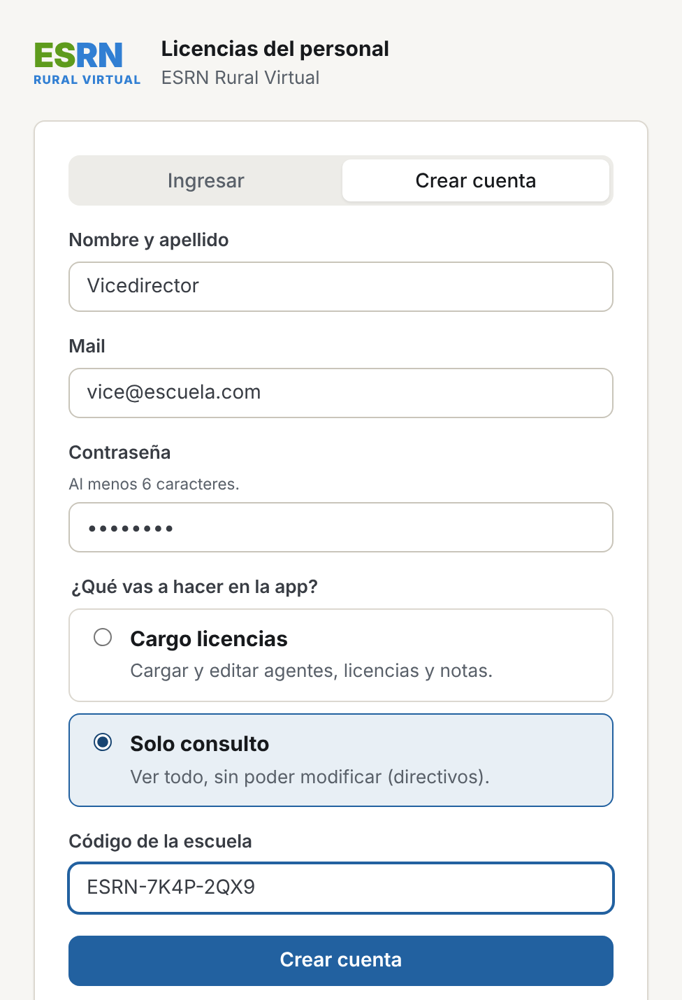
Con Googletambién se puede: tocá Continuar con Google, elegí tu cuenta de Gmail y después la app te pide qué vas a hacer y el código. Así no tenés que recordar otra contraseña.
Si dice que el código no es correcto,revisá que esté completo, con los guiones, o pedí el código de nuevo. Puede que quien administra lo haya cambiado.
3. Entrar cada día
Escribí tu mail y tu contraseña y tocá Ingresar (o Continuar con Google, si creaste la cuenta así). En tu compu la sesión queda abierta: la mayoría de los días la app se abre directamente, sin pedir nada.
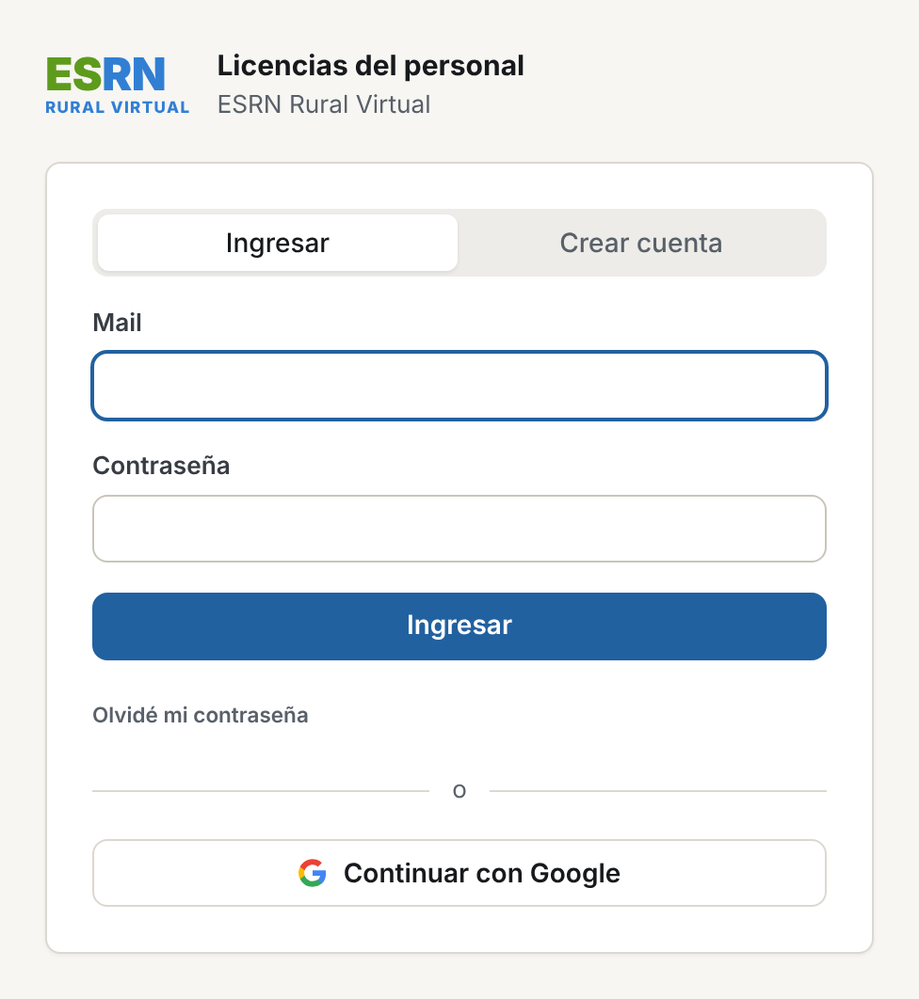
¿Te olvidaste la contraseña? Escribí tu mail y tocá Olvidé mi contraseña. Te llega un mail para elegir una nueva (si no aparece, mirá en spam).
4. La barra de arriba
Arriba están las secciones (Inicio, Agentes, Reportes, Ajustes), tu usuario, el indicador de guardado, el buscador y el botón verde + Licencia:
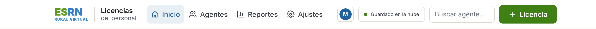
| El indicador dice… | Qué significa |
|---|
| Guardado en la nube | Todo bien: lo que cargaste ya está en el servidor. |
| Guardando… | Lo está subiendo. Tarda un segundo. |
| Sin conexión | No hay internet. Podés seguir cargando: queda en la compu y se sube solo cuando vuelve la conexión. |
| No se pudo guardar | El servidor no aceptó el cambio. Recargá la página y, si sigue, avisale a quien administra. |
| Datos al día | Lo ven los usuarios de consulta: están viendo lo último que se cargó. |
En pantallas más chicas, el indicador y tu usuario muestran sólo el punto de color y la inicial. Pasando el mouse por encima se lee el texto.
Tu usuario y cómo salir
Tocando tu inicial se abre tu usuario, con tu tipo de usuario y los botones para salir:
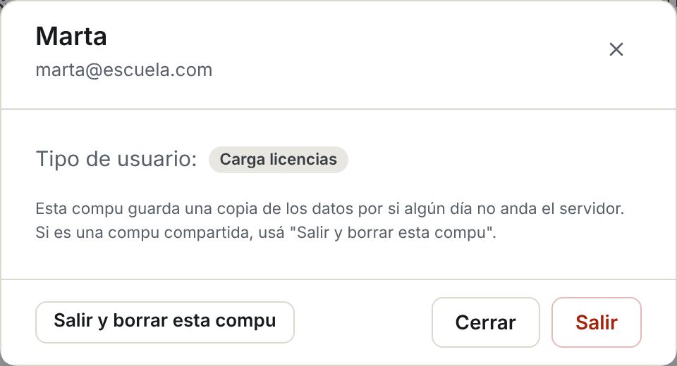
- Salir cierra la sesión. La compu se queda con una copia de los datos, por si algún día no anda el servidor (punto 15).
- Salir y borrar esta compu cierra la sesión y borra todo de esa compu. Usalo en una compu que no es tuya o que comparten varias personas.
Sin internet, no salgas.Si cerrás la sesión mientras dice "Sin conexión: se sube al volver", lo que todavía no se subió se pierde.
5. La pantalla de Inicio
Es lo que reemplaza al planificador semanal. De un vistazo muestra:
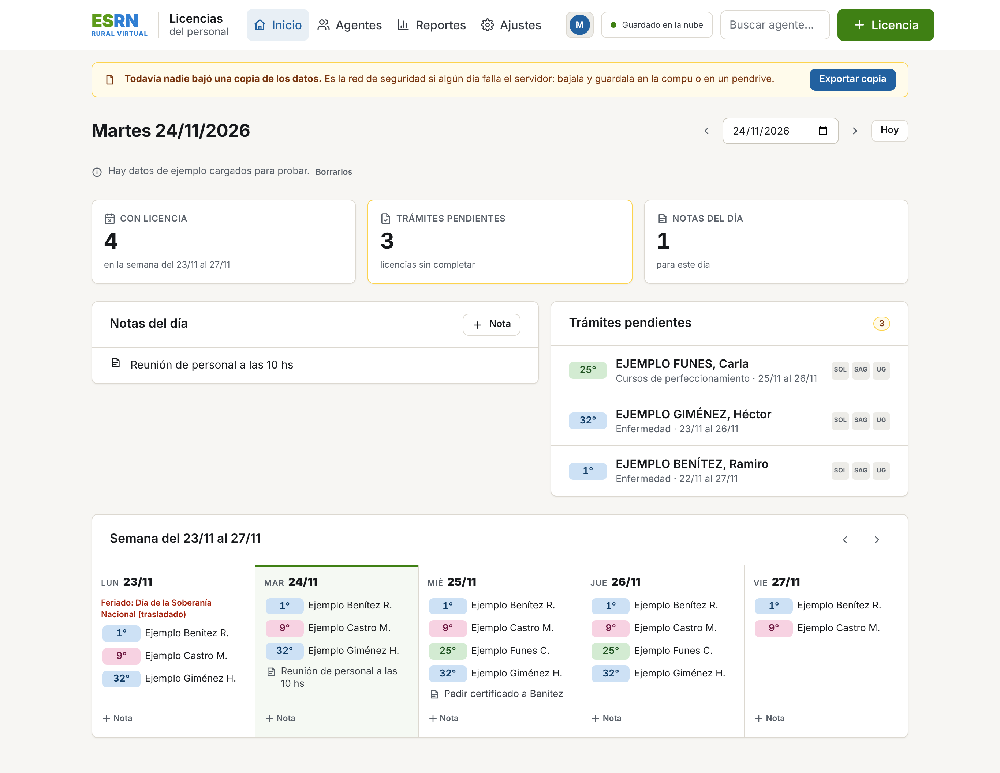
- Las tres tarjetas de arriba: cuántos agentes tienen licencia en la semana, cuántas licencias tienen trámites sin completar (se marca en amarillo si hay alguna) y cuántas notas hay para ese día.
- Notas del día: lo que quieras anotar para ese día (punto 9).
- Trámites pendientes: licencias a las que les falta algún paso. Cada una muestra tres cuadraditos: SOL solicitud, SAG cargado en SAGE y UG elevado a UG. Cuando un paso está hecho, el cuadradito se pone verde con un tilde ✓. Si la solicitud ya se venció, aparece en rojo.
- La semana de lunes a viernes, con los feriados, las licencias y las notas de cada día. El día de hoy va marcado en verde.
Con las flechas ‹ › te movés de día (o de semana) y con Hoy volvés al día de hoy.
El aviso amarillo de "copia de los datos"aparece si pasaron 7 días o más sin que nadie baje una copia. Tocá Exportar copia y guardá el archivo en la compu o en un pendrive (punto 14). Cuando alguien la baja, el aviso desaparece para todos.
6. Cargar un agente
- Andá a Agentes y tocá + Nuevo agente.
- Completá apellido, nombre y régimen: Docentes (Res. 233/98) o Personal PSA (Ley 3487). Es importante, porque cada régimen tiene sus artículos y algunos feriados son sólo de un régimen (punto 12).
- Completá los datos de la planilla: DNI, CUIL, fecha de nacimiento, domicilio, teléfono, mail, legajo personal, legajo de junta y título. Si no tenés alguno, dejalo vacío y lo completás después.
- En Cargos poné cada cargo o cátedra con horas, curso, ID de cargo, carácter, resolución, alta y baja. Si tiene más de un cargo, tocá + Agregar cargo.
- En cada cargo, en Días y horario de trabajo, tildá los días que trabaja en cada turno (mañana, tarde o vespertino/noche) y, si querés, la hora de entrada y de salida. Si un día trabaja a la mañana y a la tarde, tildalo en los dos turnos. Con eso, en su planilla quedan pintados de amarillo los días que le toca trabajar.
- Tocá Guardar agente.
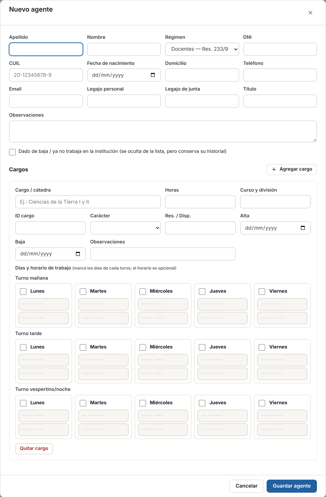
Si alguien deja de trabajar en la escuela,no lo borres: en "Editar datos" marcá "Dado de baja". Así desaparece de la lista pero conserva todo su historial.
7. Cargar una licencia
- Tocá el botón verde + Licencia (está siempre arriba).
- En Agente se abre la lista. Escribí parte del apellido o el DNI para achicarla y elegilo con un clic (o con las flechas y Enter).
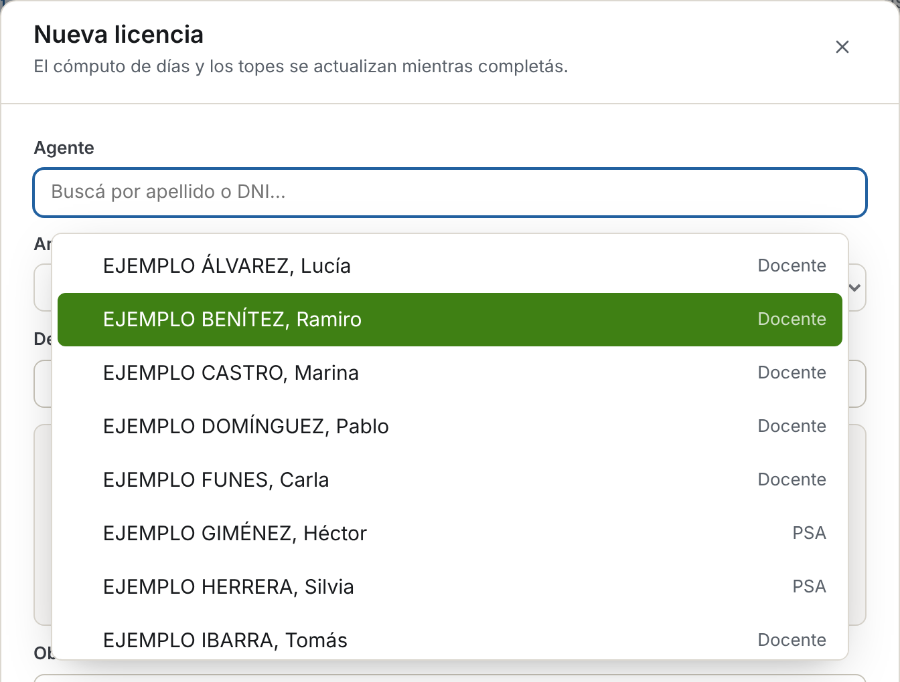
- Elegí el Artículo. Primero aparecen los que ese agente usó últimamente. Abajo se muestra un recuadro verde con lo que dice la resolución sobre ese artículo.
- Poné la fecha Desde y después una de dos: la cantidad de días o la fecha Hasta. La otra se calcula sola, descontando fines de semana y feriados cuando el artículo cuenta días hábiles.
- Mirá el recuadro gris que aparece debajo de las fechas: dice cuántos días son, qué días no se cuentan, cuántos de esos días le tocaba trabajar y cuántos le quedan del tope.
- Tildá los trámites que ya están hechos. Los que falten quedan como pendientes en Inicio.
- Tocá Guardar. Si tenés que cargar otra seguida, usá Guardar y cargar otra.
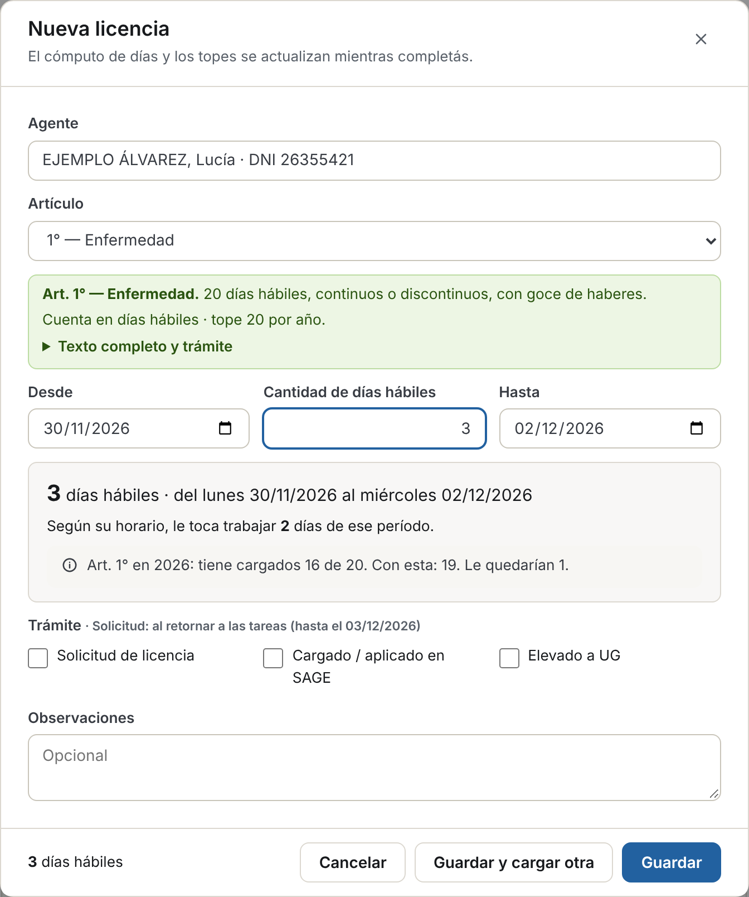
Los avisos en amarillo no te frenan: te avisan.Por ejemplo, si con esta licencia se pasa del tope anual, si se superpone con otra o si el artículo admite menos días. Leelos y, si está bien así, guardá igual. Los avisos en rojo sí hay que corregirlos (por ejemplo, una fecha "hasta" anterior a la "desde").
Las licencias cargadas a futurocuentan para el tope desde el momento en que las cargás. Por ejemplo: si un docente ya tomó 5 días del art. 20° b y tiene 1 más cargado para la semana que viene, la app dice que usó 6 (5 + 1 programado) y que no le quedan días.
Otra forma más rápida
En la planilla anual de un agente (punto 8), tocá directamente un día vacío: se abre la carga de licencia ya con ese agente y esa fecha.
Corregir o borrar una licencia
Tocá la licencia (en la planilla, en la lista de licencias del agente o en Trámites pendientes) y se abre para editarla. Abajo a la izquierda está Borrar. Si te equivocás al borrar, abajo a la derecha aparece "Deshacer" durante unos segundos.
8. Consultar a un agente ("licencias a la fecha de…")
Arriba, en "Buscar agente…", escribí el apellido y elegilo de la lista. Se abre su ficha completa:
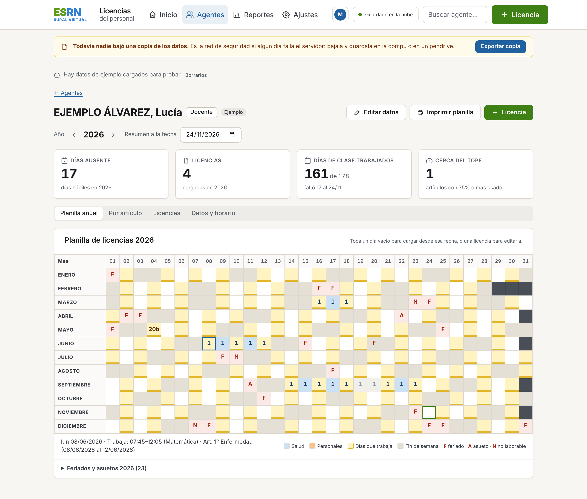
- Las cuatro tarjetas de arriba: días hábiles que faltó en el año, cuántas licencias tiene, días de clase trabajados (punto 11) y cuántos artículos tiene cerca del tope (75% o más).
- Las pestañas:
- Planilla anual: igual a la planilla amarilla. Cada día con licencia muestra el número de artículo con un color según el tipo. Los días que trabaja van en amarillo claro, los fines de semana en gris y los feriados con F (feriado), A (asueto) o N (no laborable). Pasando el mouse por un día, el detalle aparece debajo de la grilla.
- Por artículo: días usados, tope y cuántos le quedan de cada artículo.
- Licencias: la lista con fechas, días y los cuadraditos del trámite.
- Datos y horario: DNI, legajos, cargos, días y horario de trabajo.
- Resumen a la fecha: cambiando esa fecha ves cómo estaba a cualquier día del año.
- Imprimir planilla imprime la ficha con el formato de la planilla amarilla, más el resumen.
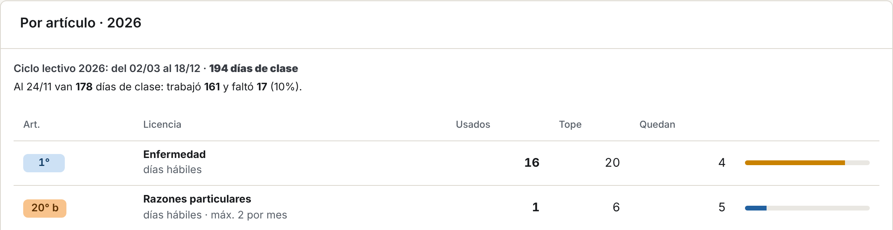
En Agentes tenés la lista de todos: régimen, DNI, ID de cargo, cargos, los días que faltó y el detalle por artículo (por ejemplo 1° 16 quiere decir 16 días por artículo 1°). Arriba están el buscador y los filtros Todos / Docentes / PSA. Tocando el título de una columna se ordena.
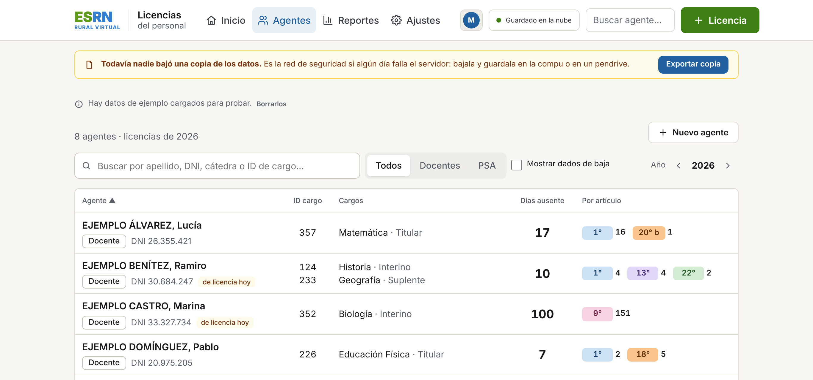
9. Notas del día
Para anotar lo que antes iba en el planificador: en Inicio, tocá + Nota en "Notas del día" o debajo de cualquier día de la semana. Escribí la nota y tocá Guardar nota. Para corregirla o borrarla, tocala. Las notas también las ven todos los usuarios.
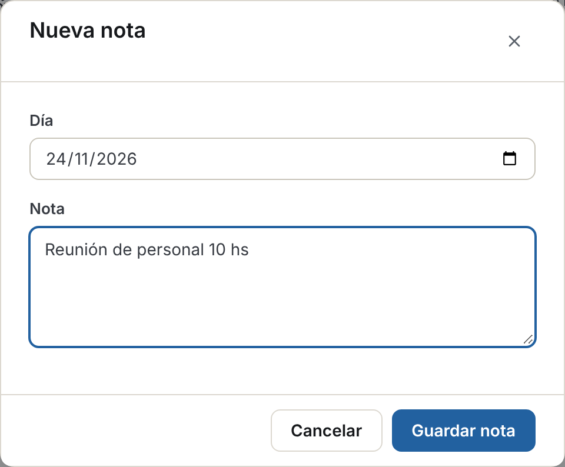
10. Reportes y nómina del personal
En Reportes hay dos pestañas.
Licencias
Elegís un período (o tocás "Este mes", "Mes anterior" o "Este año") y, si querés, un régimen o un artículo. Muestra cuántas licencias y cuántos días hábiles faltó cada agente en el período, y, si está cargado el ciclo lectivo, cuántos días de clase faltó y cuántos trabajó. Más abajo está el listado de todas las licencias del período.
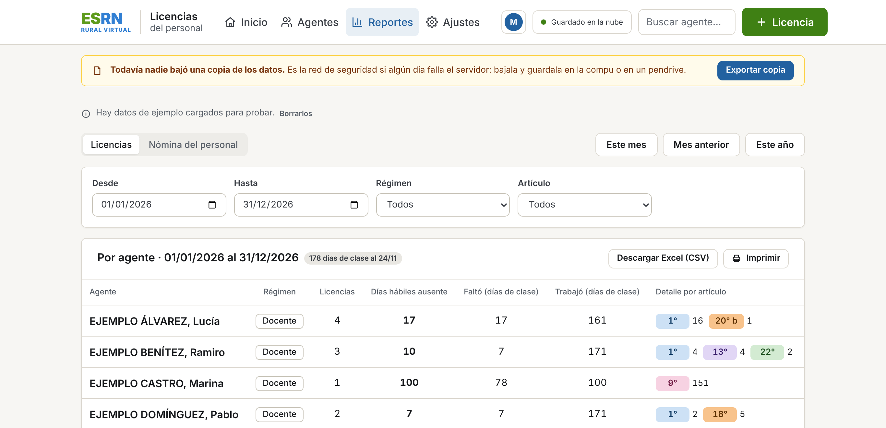
Nómina del personal
El padrón de todo el personal con CUIL, legajo personal, legajo de junta, ID de cargo, materia y fecha de nacimiento. Se puede filtrar por Docentes o PSA e incluir a los dados de baja.
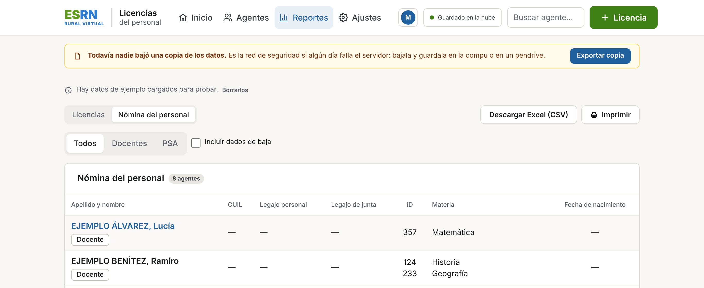
En las dos, Descargar Excel (CSV) lo baja para abrir en Excel (en la nómina, una fila por cargo) y Imprimir lo imprime.
11. Días de clase (ciclo lectivo)
Sirve para saber, por ejemplo, que hubo 194 días de clase y que un docente trabajó 161 y faltó 17. Para que la app lo calcule, hay que cargar cuándo empiezan y terminan las clases:
- Andá a Ajustes → pestaña Feriados y asuetos.
- En el recuadro "Ciclo lectivo", poné el Inicio de clases y el Fin de clases de ese año.
- Abajo aparece cuántos días hábiles de clase hay.
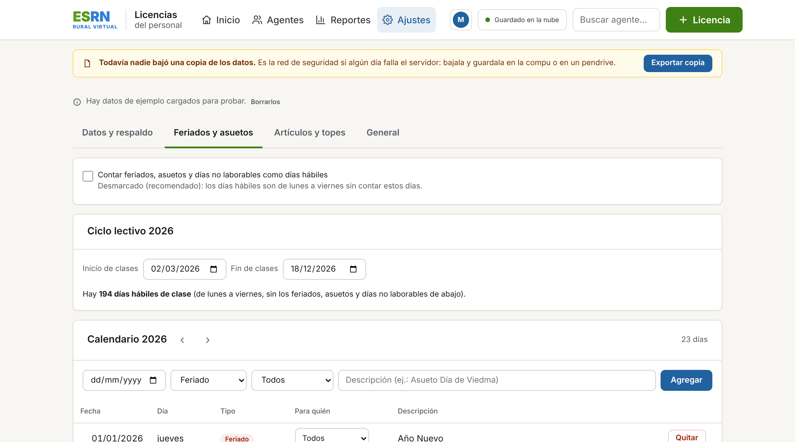
Una vez cargado, se ve en la tarjeta "Días de clase trabajados" de la ficha del agente, en la pestaña Por artículo y en las columnas "Faltó" y "Trabajó" de Reportes.
Para tener en cuenta:los días que todavía no pasaron no cuentan como trabajados. Las licencias que caen fuera del ciclo (por ejemplo, la licencia anual de enero) no cuentan como faltas. Hay que cargar el ciclo de cada año: el de 2027 se carga pasando de año con las flechas del calendario.
12. Feriados, artículos y topes (Ajustes)
Feriados y asuetos, por régimen
Ya están cargados los de 2026 y 2027. Cada uno tiene una columna "Para quién": Todos, Sólo docentes o Sólo PSA. Por ejemplo, el 11/09, Día del Maestro, es asueto sólo para docentes: a un docente no le cuenta como día hábil, pero al personal PSA sí, porque ese día trabaja.
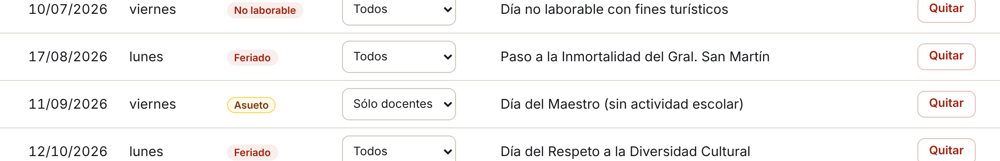
Para agregar un asueto o un día sin clases nuevo, poné arriba la fecha, el tipo, para quién es y la descripción, y tocá Agregar. Deja de contarse como día hábil en las licencias de ese régimen.
Artículos y topes
- Para cada artículo podés cambiar el nombre corto, si cuenta días hábiles o corridos, el tope anual, el máximo por mes, el máximo por licencia y los trámites que pide. Los cálculos se actualizan solos. Los marcados "Revisar" son los que conviene confirmar con la normativa.
- Art. 20°: está dividido en 20° a (clima o catástrofe, sin tope) y 20° b (razones particulares, 6 por año y 2 por mes).
- Gremiales (Res. 146/94): G22 (delegado de escuela, crédito horario) y G26 (delegado a plenarios, encuentros o congresos de UnTER, sin goce de haberes). Llevan la "G" para no confundirlos con los art. 22° y 26° de la Res. 233/98.
13. Usuarios (para quien administra)
Quien administra ve en Ajustes una pestaña más, Usuarios:
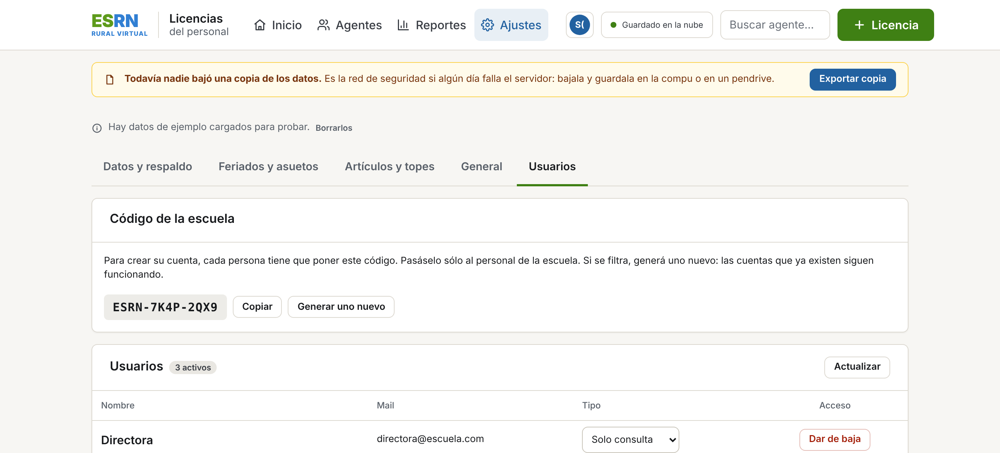
- Código de la escuela: es el que hay que pasarle a cada persona para que cree su cuenta. Con Copiar lo copiás para mandarlo por mensaje. Si se lo pasaste a alguien que no debía tenerlo, tocá Generar uno nuevo: el viejo deja de servir para crear cuentas, pero los que ya tienen cuenta siguen entrando.
- Tipo: se cambia con la lista de cada persona, por ejemplo de "Solo consulta" a "Carga licencias".
- Dar de baja: desde ese momento esa persona no puede ver ni cargar nada, aunque tenga la sesión abierta. Se puede reactivar cuando quieras.
14. Respaldo de los datos
Los datos están en el servidor, así que no se pierden si se rompe una compu. Igual hay tres redes de seguridad:
- Copia automática todas las noches, en el Google Drive de la cuenta dueña del proyecto (carpeta Copias Licencias ESRN). Se guardan las últimas 60.
- Copia en cada compu: mientras usás la app, tu compu guarda sola una copia, por si algún día no anda el servidor (punto 15).
- Exportar copia: baja un archivo con todos los datos. Conviene hacerlo una vez por semana y guardarlo en un pendrive. La app te lo recuerda con el aviso amarillo del Inicio.
Quien administra tiene, en Ajustes › Datos y respaldo, dos maneras de usar una copia:
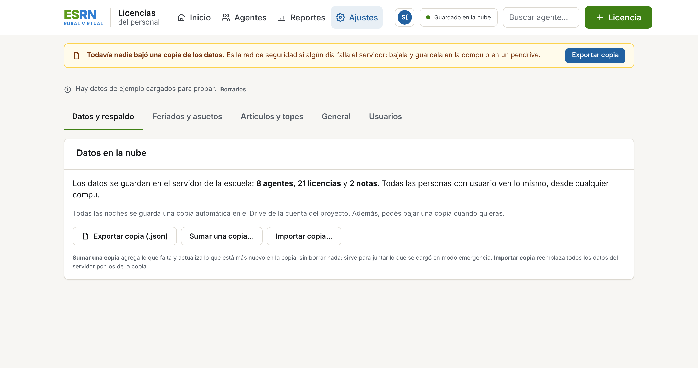
| Botón | Qué hace |
|---|
| Sumar una copia… | Agrega lo que la copia tiene de nuevo y actualiza lo que cambió, sin borrar nada. Es la que se usa para juntar lo que se cargó en modo emergencia o en el link viejo. Si se suma dos veces la misma copia, no se duplica nada. |
| Importar copia… | Reemplaza todo por lo que tiene la copia. Es para volver atrás si algo se rompió mucho, con la copia de la noche anterior al problema. Lo que se cargó después se pierde. |
15. Si no anda el servidor
Si algún día la app no puede conectarse con el servidor, en la pantalla de ingreso aparece un recuadro amarillo con "Usar la copia de esta compu":
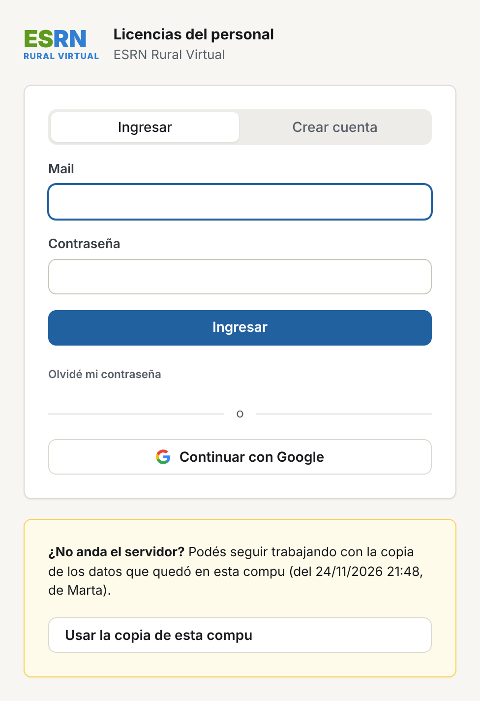
Tocándolo entrás en modo emergencia: ves los datos tal como estaban la última vez que usaste la app en esa compu, y podés seguir cargando. Arriba aparece un aviso rojo:
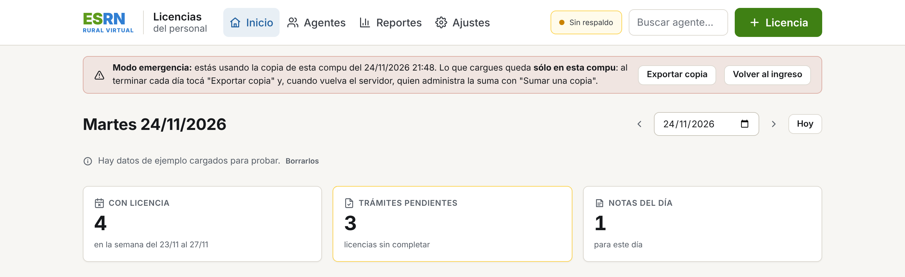
- Cargá como siempre. Lo que cargues queda guardado sólo en esa compu.
- Al terminar cada día, tocá Exportar copia y guardá el archivo.
- Cuando el servidor vuelve, tocá Volver al ingreso y entrá normal. Pasale el archivo a quien administra, que lo junta con Ajustes › Datos y respaldo › Sumar una copia… (punto 14).
Si la página ni siquiera abre,usá el link viejo (santifarah1.github.io/Licencias) y cargá ahí. Después se hace lo mismo: Exportar copia y Sumar una copia.
16. Si algo no anda
| Pasa esto… | Hacé esto |
|---|
| Dice "El código de la escuela no es correcto" | Revisá que esté completo, con los guiones. Si sigue, pedile el código a quien administra: puede que lo haya cambiado. |
| Dice que tu acceso está dado de baja | Avisale a quien administra para que te reactive. |
| El indicador dice "Sin conexión" | Seguí cargando: se sube solo cuando vuelve internet. No cierres la sesión mientras tanto. |
| No ves lo que cargó otra persona | Normalmente aparece al instante. Si no, recargá la página con F5. |
| Borré algo sin querer | Tocá "Deshacer" enseguida. Si ya pasó el momento, quien administra puede recuperarlo de la copia de la noche anterior. |
| No encuentro a un agente | Fijate que en Agentes no esté filtrado por "Docentes" o "PSA", o tildá "Mostrar dados de baja". |
| No veo los días de clase | Falta cargar el ciclo lectivo de ese año (punto 11). |
| La app se ve como antes después de un cambio | Recargá la página con Ctrl + F5. Los datos no se tocan. |
| Un número no coincide con lo que calculo yo | Abrí la licencia y mirá el recuadro gris: dice qué días contó y cuáles no. Si sigue sin coincidir, sacale una foto a la pantalla y mandásela a Santi. |
Licencias ESRN Rural Virtual · guía para la app con usuarios · noviembre 2026